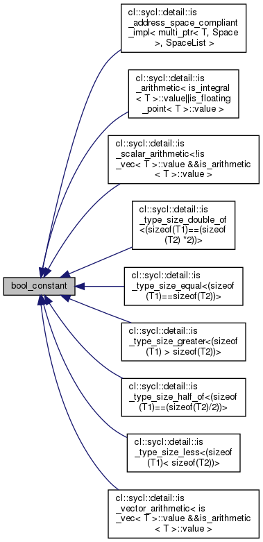

SYCL Runtime
Runtime libraries for SYCL
bool_constant Class Reference
Inheritance diagram for bool_constant:

[
legend
]
The documentation for this class was generated from the following file:
include/CL/sycl/detail/
type_traits.hpp
Generated by
1.8.13
 1.8.13
1.8.13